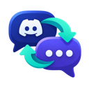

Discord inline translator
원문은 그대로 두고, 원하는 OpenAI 호환 LLM이 만든 한국어 번역을 바로 아래에 붙입니다.
OpenAI 호환 chat/completions API의 Base URL을 입력하세요.
chat/completions
예: Ollama http://localhost:11434/v1 · OpenAI https://api.openai.com/v1. 원격 주소는 저장할 때 해당 호스트 권한을 요청합니다.
http://localhost:11434/v1
https://api.openai.com/v1
연결할 제공자가 인식하는 모델 ID를 정확히 입력하세요.
인증이 필요한 제공자만 입력하세요. 값이 없으면 인증 헤더 없이 요청합니다.
키는 브라우저의 확장 전용 로컬 저장소에 보관됩니다. 원격 서버에 키를 보낼 때는 HTTPS만 허용합니다.
메시지 끝에 표시할 아이콘을 선택하세요.
텍스트와 배경 색상을 함께 선택하세요. 기본은 배경 없이 표시합니다.
아이콘을 눌러 번역을 접거나, 번역문 끝의 재시도 아이콘을 시험해 보세요.
설정 저장을 누르면 열려 있는 Discord 탭에도 적용됩니다.